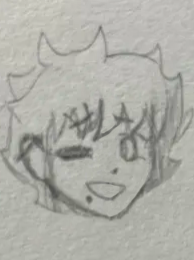

The Terrariums

they/he/she/it
| Name | Mars MacHalloran |
| Birthday | Quadtilis 4, 2004 |
| Size | 5'7 |
| Breed | Spanish |
| Sex | Of course! |
| Comes from | susnet |
Background: She was adopted by the MacHallorans the summer before Jimmy was supposed to go to kindergarten. She often struggles with intimacy and has a challenging time maintaining appropriate relationships.


| Favorite activity: | Adultery |
| Favorite food: | Honey |
| Favorite drink: | Passionfruit kombucha |
| Favorite toy: | Sewing pins and needles |
| Personal item: | A vintage pearl necklace |
Fun Facts:
- Excluding her mother, who died birthing her, all of her immediate biological family members died on their birthdays.
- She went into her first year of school very late. Up until what would've been 6th grade for her, she always had solo teaching sessions with specialists on campus instead of being in classrooms.
- -
Distinct features: Mars has three moles. One by her lower lip on the right, one in the middle of her left cheek, and one by her left eye on the side of her nose.
Personality: She is reckless and bluntly rude, but prefers the word "carefree and open".
Fashion sense: Alternative and tomboyish feminine.
Other notes:
Bonded to: Jimmy MacHalloran (Adoptive brother)
Averse to: Fry Sharpe (Brother-in-law)
Plays well with: Mina MacHalloran (Daughter)
Separate from: